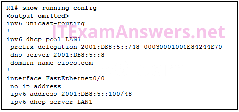

1.Los buffers para el procesamiento de paquetes y el archivo de configuración en ejecución se almacenan temporalmente en qué tipo de memoria de enrutador?
- RAM *
- destello
- NVRAM
- ROM
- @javi__super
2.Consulte la presentación. Una empresa tiene una red interna de 192.168.10.0/24 para las estaciones de trabajo de sus empleados y una red DMZ de 192.168.3.0/24 para los servidores host. La empresa utiliza NAT cuando los hosts internos se conectan a la red externa. Un administrador de red emite el comando show ip nat translations para verificar las configuraciones de NAT. ¿Cuál de las direcciones IPv4 de origen es traducida por R1 con PAT?
- 192.168.10.35 *
- 192.168.3.33
- 10.0.0.31
- 192.168.3.5
- @javi__super
3.Consulte la presentación. Esta red tiene dos conexiones al ISP, una a través del enrutador C y otra a través del enrutador B. El enlace en serie entre el enrutador A y el enrutador C es compatible con EIGRP y es el enlace principal a Internet. Si el enlace principal falla, el administrador necesita una ruta estática flotante que evite las búsquedas recursivas de ruta y cualquier posible problema de salto próximo causado por la naturaleza de acceso múltiple del segmento Ethernet con el enrutador B. ¿Qué debe configurar el administrador?
- Cree una ruta estática completamente especificada que apunte a Fa0 / 0 con un AD de 95. *
- Cree una ruta estática que apunte a Fa0 / 0 con un AD de 1.
- Cree una ruta estática que apunte a 10.1.1.1 con un AD de 95.
- Cree una ruta estática que apunte a 10.1.1.1 con un AD de 1.
- @javi__super
4.¿Qué tipo de diseño de comunicación inter VLAN requiere la configuración de múltiples subinterfaces?
- enrutador en un palo *
- enrutamiento inter-VLAN heredado
- Enrutamiento para la gestión de la VLAN.
- enrutamiento a través de un interruptor de múltiples capas
- @javi__super
5.Después de habilitar el aprendizaje permanente de las direcciones MAC, ¿qué acción se necesita para evitar que las direcciones MAC aprendidas dinámicamente se pierdan en caso de que una interfaz asociada se caiga?
- Copie la configuración en ejecución a la configuración de inicio. *
- Apague la interfaz y luego vuelva a habilitarla con el comando no shutdown.
- Reinicie el interruptor.
- @javi__super
- Configurar la seguridad del puerto para el modo de protección de violación.
6.Un técnico de red está configurando la seguridad del puerto en los switches. Las interfaces en los switches se configuran de tal manera que cuando ocurre una violación, los paquetes con direcciones de origen desconocidas se eliminan y no se envía ninguna notificación. ¿Qué modo de violación está configurado en las interfaces?
- proteger *
- apagado
- apagar
- restringir
- @javi__super
7.Un técnico está configurando un interruptor para permitir el acceso tanto a teléfonos IP como a PC en la interfaz Fa0 / 12. El técnico ingresa el comando de interfaz mls qos trust cos. ¿Cuál es la razón para incluir ese comando?
- Se utiliza para establecer el estado de confianza de una interfaz para permitir la clasificación del tráfico para QoS según el valor de CoS del teléfono IP. *
- Se utiliza para proporcionar categorías más altas de seguridad para el tráfico de voz y video.
- Se utiliza junto con STP PortFast para garantizar que la interfaz Fa0 / 12, en caso de un apagado, recupere un estado "activo" inmediatamente.
- Se utiliza para verificar los niveles de servicio y para garantizar que la congestión en las interfaces seriales se minimice para el tráfico de voz.
- @javi__super
8.¿Cuál es la configuración mínima para una interfaz de enrutador que participa en el enrutamiento IPv6?
- tener solo una dirección IPv6 local de enlace *
- tener tanto una dirección IPv6 de enlace local como una global
- tener tanto una dirección IPv4 como una dirección IPv6
- tener solo una dirección IPv6 de multidifusión generada automáticamente
- @javi__super
9.Consulte la presentación. Suponiendo que las tablas de enrutamiento están actualizadas y que no se necesitan mensajes ARP, después de que un paquete sale de H1, ¿cuántas veces se reescribe el encabezado L2 en la ruta a H2?
- 2 *
- 1
- 5
- 34
- @javi__super
10.¿Qué comando permitirá que un enrutador comience a enviar mensajes que le permitan configurar una dirección de enlace local sin utilizar un servidor DHCP IPv6?
- una ruta estática
- el comando de enrutamiento unicast ipv6 *
- la ruta ipv6 :: / 0 comando
- el comando de enrutamiento ip
- @javi__super
11.¿Qué método de conmutación proporciona una transmisión de datos sin errores?
- almacenamiento y reenvio *
- libre de fragmentos
- avance rápido
- comprobación de integridad
- @javi__super
12.¿Qué problema es evidente si el comando show ip interface muestra que la interfaz está inactiva y el protocolo de línea está inactivo?
- No se ha conectado un cable al puerto. *
- Existe un conflicto de direcciones IP con la dirección configurada en la interfaz.
- El comando no shutdown no se ha emitido en la interfaz.
- Se ha producido un desajuste de encapsulación.
- @javi__super
13.Una política de seguridad de la empresa requiere que todas las direcciones MAC se aprendan dinámicamente y se agreguen a la tabla de direcciones MAC y a la configuración en ejecución en cada conmutador. ¿Qué configuración de seguridad de puerto logrará esto?
- direcciones MAC seguras y pegajosas *
- direcciones MAC seguras estáticas
- direcciones MAC seguras de auto
- direcciones MAC seguras dinámicas
- @javi__super
14.Consulte la presentación. Una pequeña empresa utiliza las VLAN 8, 20, 25 y 30 en dos conmutadores que tienen un enlace troncal entre ellos. ¿Qué VLAN nativa se debe usar en el troncal si se implementan las mejores prácticas de Cisco?
- 5 *
- 2
- 3
- 4
- @javi__super
15.Un administrador de red está configurando una ACL con el comando lista de acceso 10 permiso 172.16.32.0 0.0.15.255. ¿Qué dirección IPv4 coincide con la ACE?
- 172.16.45.2 *
- 172.16.20.2
- 172.16.26.254
- 172.16.48.5
- @javi__super
16.Se omitió la inicialización del PT. No podrás ver la actividad del PT. Abra la actividad PT. Realice las tareas en las instrucciones de la actividad y luego responda la pregunta. ¿Qué código se muestra en el navegador web?
- ¡Funciona!*
- Inter-VLANconfigurado!
- ¡Bien hecho!
- Grea
- @javi__super
17.¿Qué comando se emite en el modo de configuración de línea VTY para aplicar una ACL estándar que controlará el acceso de Telnet a un enrutador?
- clase de acceso 11 en *
- grupo de acceso 11 en
- lista de acceso 11 en
- lista de acceso 110 en
- @javi__super
18.¿Qué serie de comandos hará que la lista de acceso 15 restrinja el acceso a Telnet en un enrutador?
- R1 (config) # line vty 0 4 R1 (config-line) # access-class 15 in *
- R1 (config) # line vty 0 4 R1 (config-line) # ip access-group 15 in
- R1 (config) # int gi0 / 0 R1 (config -if) # ip access-group 15 in
- R1 (config) # int gi0 / 0 R1 (config -if) # access-class 15 in
- @javi__super
19.¿Qué tres afirmaciones describen con precisión los tipos de VLAN? (Elige tres).
- Una VLAN de administración es cualquier VLAN configurada para acceder a las funciones de administración del conmutador. *
- Una VLAN de datos se utiliza para transportar datos de administración de VLAN y el tráfico generado por el usuario.
- Un puerto troncal 802.1Q, con una VLAN nativa asignada, admite tráfico etiquetado y no etiquetado. *
- Después del inicio inicial de un conmutador no configurado, todos los puertos son miembros de la VLAN predeterminada. *
- @javi__super
20.Un cliente está utilizando SLAAC para obtener una dirección IPv6 para su interfaz. Una vez que se ha generado y aplicado una dirección a la interfaz, ¿qué debe hacer el cliente antes de que pueda comenzar a usar esta dirección IPv6?
- Debe enviar un mensaje de solicitud de vecino ICMPv6 para asegurarse de que la dirección no esté en uso en la red. *
- Debe enviar un mensaje de SOLICITUD DE INFORMACIÓN DHCPv6 para solicitar la dirección del servidor DNS.
- Debe enviar un mensaje de solicitud de enrutador ICMPv6 para determinar qué puerta de enlace predeterminada debe usar.
- Debe enviar un mensaje de SOLICITUD DHCPv6 al servidor DHCPv6 para solicitar permiso para usar esta dirección.
- @javi__super
21.¿Qué mensaje DHCP IPv4 contiene la siguiente información? Dirección de destino: 255.255.255.255 Dirección IPv4 del cliente: 0.0.0.0 Dirección de la puerta de enlace predeterminada: 0.0.0.0 Máscara de subred: 0.0.0.0
- DHCPDISCOVER *
- DHCPOFFER
- DHCPACK
- @javi__super
- DHCPREQUEST
22.Un administrador de red está implementando DHCPv6 para la compañía. El administrador configura un enrutador para enviar mensajes RA con el indicador M como 1 mediante el comando de interfaz ipv6 nd managed-config-flag. ¿Qué efecto tendrá esta configuración en el funcionamiento de los clientes?
- Los clientes deben usar toda la información de configuración que proporciona un servidor DHCPv6. *
- Los clientes deben usar la información contenida en los mensajes de RA.
- Los clientes deben usar el prefijo y la longitud del prefijo que proporcionan los mensajes de RA y obtener información adicional de un servidor DHCPv6.
- Los clientes deben usar el prefijo y la longitud del prefijo que proporciona un servidor DHCPv6 y generar un ID de interfaz aleatorio.
- @javi__super
23.Consulte la presentación. Los usuarios en la red LAN de R1 no pueden recibir una dirección IPv6 del servidor DHCPv6 con estado configurado. ¿Qué falta en la configuración de DHCPv6 con estado en el enrutador R1?
-

- A la interfaz FA0 / 0 le falta el comando que informa a los clientes de usar DHCPv6 con estado. *
- IPv6 no se ha habilitado globalmente en el enrutador R1.
- El grupo DHCPv6 no se ha vinculado a la interfaz LAN.
- El grupo DHCPv6 no coincide con la dirección IPv6 configurada en la interfaz FA0 / 0.
- @javi__super
24.Consulte la presentación. NAT está configurado en R1 y R2. La PC está enviando una solicitud al servidor web. ¿Qué dirección IPv4 es la dirección IP de origen en el paquete entre R2 y el servidor web?
- 209.165.200.245 *
- 10.130.5.76
- 172.16.1.10
- 203.0.113.5
- @javi__super
25.Consulte la presentación. R1 está configurado para NAT como se muestra. ¿Qué hay de malo con la configuración?
- NAT-POOL2 no está vinculado a ACL 1. *
- La interfaz Fa0 / 0 debe identificarse como una interfaz NAT externa.
- El conjunto de NAT es incorrecto.
- La lista de acceso 1 está mal configurada.
- @javi__super
26.Un ingeniero de redes está configurando PAT en un enrutador y ha emitido el comando:
ip nat lista de origen 1 interfaz serial 0/1/0 sobrecarga
¿Qué comando adicional se requiere para especificar las direcciones de la red 192.168.128.0/18 como las direcciones locales internas?
- lista de acceso 1 permiso 192.168.128.0 0.0.63.255 *
- ip nat dentro de la lista de fuentes 1 grupo INSIDE_NAT_POOL
- Permiso de la lista de acceso 1 192.168.128.0 0.0.127.255
- Permiso de la lista de acceso 1 192.168.128.0 255.255.192.0
- @javi__super
27. Consulte la presentación. Si las direcciones IP del enrutador de la puerta de enlace predeterminada y el servidor DNS son correctas, ¿cuál es el problema de configuración?
- La dirección IP del enrutador de la puerta de enlace predeterminada no está incluida en la lista de direcciones excluidas. *
- El servidor DNS y el enrutador de la puerta de enlace predeterminada deben estar en la misma subred.
- Los comandos de enrutador predeterminado y servidor dns deben configurarse con máscaras de subred.
- La dirección IP del servidor DNS no está contenida en la lista de direcciones excluidas.
- @javi__super
28.Rellena el espacio en blanco.
- En IPv6, todas las rutas son nivel ___ rutas definitivas. Respuesta correcta: 1 *
- @javi__super
29.
- El acrónimo ___ describe el tipo de tráfico que requiere una VLAN separada, requisitos estrictos de QoS y un retardo general de una vía de menos de 150 ms en la red. Estas restricciones ayudan a garantizar la calidad del tráfico. Respuesta correcta: voip *
- @javi__super
30.Consulte la presentación. Un administrador de red acaba de configurar la traducción de direcciones y está verificando la configuración. ¿Qué tres cosas puede verificar el administrador? (Elige tres.)
- La traducción de direcciones está funcionando. *
- Se usó una lista de acceso estándar numerada 1 como parte del proceso de configuración. *
- Se habilitan dos tipos de NAT. *
- Un puerto en el enrutador no participa en la traducción de la dirección.
- @javi__super
31.¿Qué destino utilizan los enrutadores y conmutadores de Cisco de forma predeterminada al enviar mensajes de syslog para todos los niveles de gravedad?
- consola *
- RAM
- NVRAM
- servidor syslog más cercano
- @javi__super
32.¿Qué requisito se debe verificar antes de que un administrador de red realice una actualización de la imagen de IOS en un enrutador?
- Hay espacio suficiente en la memoria flash. *
- El archivo de imagen IOS deseado se ha descargado en el enrutador.
- El antiguo archivo de imagen IOS ha sido eliminado.
- El servidor FTP está operativo.
- @javi__super
33.Un administrador de red configura un enrutador con la secuencia de comandos:
R1 (config) # sistema de arranque tftp: //c1900-universalk9-mz.SPA.152-4.M3.bin
R1 (config) # sistema de arranque rom
¿Cuál es el efecto de la secuencia de comandos?
- El enrutador cargará IOS desde el servidor TFTP. Si la imagen no se carga, cargará la imagen IOS de la ROM. *
- El enrutador buscará y cargará una imagen IOS válida en la secuencia de flash, TFTP y ROM.
- El enrutador copiará la imagen IOS del servidor TFTP y luego reiniciará el sistema.
- En el próximo reinicio, el enrutador cargará la imagen de IOS desde la ROM.
- @javi__super
34.¿Qué tres paquetes de software están disponibles para Cisco IOS Release 15.0?
- Comunicaciones Unificadas *
- DATOS *
- Servicios empresariales
- Seguridad *
- @javi__super
35.¿Qué dos estados de licencia se esperarían en un nuevo enrutador Cisco una vez que se haya activado la licencia? (Escoge dos.)
- Estado de la licencia: activo, en uso *
- Estado de la licencia: activo, registrado
- Tipo de licencia: ipbasek9
- Tipo de licencia: Permanente *
- @javi__super
36.¿Qué tipo de ruta estática utiliza normalmente el parámetro de distancia en el comando de configuración global de ip route?
- ruta estática flotante *
- ruta estática sumaria
- ruta estática por defecto
- ruta estática estándar
- @javi__super
37.Consulte la presentación. ¿Qué tipo de ruta estática IPv6 está configurada en la exhibición?
- ruta estática recursiva *
- ruta estática completamente especificada
- ruta estática conectada directamente
- @javi__super
- ruta estática flotante
38.Consulte la presentación. ¿Qué ruta se configuró como una ruta estática a una red específica utilizando la dirección del siguiente salto?
- S 10.0.2.0/24 [1/0] a través de 192.168.2.2 *
- S 0.0.0.0/0 [1/0] a través de 192.168.2.2
- C 192.168.2.0/24 está directamente conectado, Serial0 / 0/0
- S 10.0.2.0/24 está conectado directamente, Serial 0/0/0
- @javi__super
39.Un administrador de red ha ingresado el siguiente comando:
ruta ip 192.168.10.64 255.255.255.192 serial0 / 0/1
Cuando el administrador de la red ingresa el comando show ip route, la ruta no está en la tabla de enrutamiento. ¿Qué debe hacer el administrador a continuación?
- Verifique que la interfaz serial 0/0/1 esté activa y disponible. *
- Vuelva a ingresar el comando usando un número de red en lugar de una dirección IP utilizable.
- Vuelva a ingresar el comando usando la máscara correcta.
- Verifique que la red 192.168.10.64 esté activa dentro de la infraestructura de la red.
- @javi__super
40.Consulte la presentación. ¿Cómo obtuvo el enrutador la última ruta que se muestra?
- Otro enrutador en la misma organización proporcionó la ruta predeterminada utilizando un protocolo de enrutamiento dinámico. *
- Se utilizó el comando de ruta ipv6.
- Se utilizó el comando ip route.
- El comando del modo de configuración de la interfaz de la dirección IP se usó además del comando del modo de configuración del protocolo de enrutamiento de la red.
- @javi__super
41.Para habilitar el enrutamiento RIP para una subred específica, el administrador de red ingresó la red de comandos de configuración 192.168.5.64. ¿Qué dirección, si hay alguna, aparece en el archivo de configuración en ejecución para identificar esta red?
- 192.168.5.0 *
- 192.168.5.64
- 192.168.0.0
- No se muestra ninguna dirección.
- @javi__super
42.Consulte la presentación. ¿Cuál es el valor de la distancia administrativa que indica la ruta para que R2 alcance la red 10.10.0.0/16?
- 1 *
- 120
- 4
- 2
- @javi__super
43.Consulte la presentación. ¿Qué tipo de ruta es 172.16.0.0/16?
- ruta padre nivel 1 *
- ruta final
- ruta infantil
- Ruta por defecto
- @javi__super
44.¿Cuál es el nombre de la capa en el diseño de red conmutada sin bordes de Cisco que tendría más switches implementados que otras capas en el diseño de red de una organización grande?
- acceso *
- red
- enlace de datos
- acceso a la red
- @javi__super
45.¿Qué es una función de la capa de distribución?
- Interconexión de redes a gran escala en armarios de cableado *
- conectividad backbone de alta velocidad
- Acceso de red al usuario.
- de fallos de aislamiento
- @javi__super
46.¿Qué principio de diseño de red se enfoca en la capacidad de expansión de red continua bajo demanda en una red conmutada?
- modularidad *
- flexibilidad
- resistencia
- jerárquico
- @javi__super
47.Un laboratorio en una compañía de software de administración de redes está configurando un entorno de prueba para verificar el rendimiento de un nuevo software con diferentes velocidades de conectividad de red, incluyendo FastEthernet, GigabitEthernet y 10 GigabitEthernet, y con conexiones de cobre y fibra óptica. ¿Qué tipo de interruptor debe comprar la compañía de software para realizar las pruebas?
- configuración modular *
- apilable
- capa de acceso
- configuración fija
- @javi__super
48.¿Qué dos condiciones de licencia se esperarían en un nuevo enrutador Cisco una vez que se haya activado la licencia? (Escoge dos.)
- Tipo de licencia: Permanente *
- Tipo de licencia: ipbasek9
- Estado de la licencia: en
- Estado de la licencia: activo, en uso *
- @javi__super
49.En una tabla de enrutamiento de IPv6, todas las entradas de la tabla de enrutamiento se clasifican como qué tipo de rutas?
- Rutas definitivas de nivel 1 *
- rutas padre nivel 1
- rutas de red de nivel 1
- rutas infantiles de nivel 2
- @javi__super
50.¿Qué tipo de tráfico requiere una VLAN separada, requisitos estrictos de QoS y un retardo general de una vía de menos de 150 ms en la red?
- VoIP *
- HTTP
- POP / IMAP
- video
- @javi__super
51.¿Qué información se agrega a la tabla de interruptores desde los marcos entrantes?
- Dirección MAC de origen y número de puerto entrante *
- dirección IP de destino y número de puerto entrante
- dirección MAC de destino y número de puerto entrante
- dirección IP de origen y número de puerto entrante
- @javi__super
52.¿Qué enunciado describe correctamente cómo un conmutador de LAN reenvía los cuadros que recibe?
- Las decisiones de reenvío de tramas se basan en la dirección MAC y las asignaciones de puertos en la tabla CAM. *
- El reenvío de fotogramas de corte garantiza que siempre se eliminan los fotogramas no válidos.
- Solo los marcos con una dirección de destino de difusión se reenvían a todos los puertos de conmutación activos.
- Las tramas de unidifusión siempre se reenvían independientemente de la dirección MAC de destino.
- @javi__super